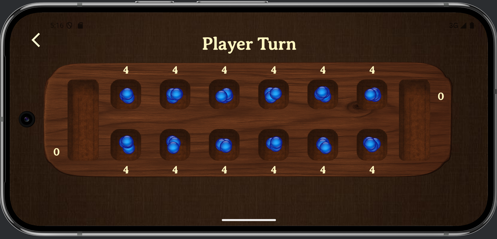

Hello! My name is Julia Duffy.
I am a software developer, currently working towards a master's degree in computer science at the University of Utah. My primary interests are in Full Stack Development, Computer Security, Computer Systems, and App Development. In my free time, I enjoy rock climbing and traveling!
My Resume


My Work Experience
Software Engineering Intern | Pusher LLC
- Last summer, I joined my favorite climbing hold company, Pusher, as a Software Engineering Intern. During my internship, I rebuilt their shipping system, introduced international shipping to their WordPress website, and integrated Shippo's RESTful API to streamline their order management system.
- The work I did increased Pusher's clothing profits by an estimated $7,400 per year and improved their overall efficiency by implementing systems that automated their shipment process.
Software Engineer | AirWise: EPA-Funded Research Project
- This year, I am working in a team of four on a project funded by the Environmental Protection Agency. Our goal is to design and build AirWise, a mobile and web application that tracks and improves indoor air quality in schools.
- I am in charge of some of the backend of this app, the database, and data persistence in the app. Flutter/ Dart, Cloud Firestore, and Firebase.
Computer Science Teaching Assistant | University of Utah
- I currently work as a teaching assistant for Software Practice I at the University of Utah.
- When I started, I was very nervous about having to presenting in front of a class but over time, I’ve grown to genuinely love it. This role has strengthened my communication skills and deepened my confidence as a developer overall.
- I now feel much more comfortable with C#, .NET Core, and have gained valuable debugging and problem solving skills.
Personal Projects:
Custom Programming Language Interpreter built with Racket
For the final project of my programming languages course, I designed and implemented a full interpreter in Racket. The interpreter supports the parsing and evaluation of a custom object-oriented programming language called "Moe". This project/course taught me about programming languages concepts such as continuations, recursion, variable encodings, garbage collection, tail calls, lambda calculus, memory allocation, and more.
Climbing Team Website
Built an informational website for at the Climbing Team at the University of Utah using HTML, CSS, and JavaScript. See the finished product at utahclimbingteam.com and the github repository at this link. The climbing team has over 300 active members, making it one of the largest clubs on campus. This website serves as a main communication platform for the team and sees hundreds of visitors per semester. This website is currently being managed by a new club member. To ensure that new maintainers can figure things out quickly, I created extensive documentation.
Image Regognition App w/ Custom TensorFlow ML Model
Constructed an app that is able to classify five different classes of fruit: apples, bananas, grapes, oranges, and strawberries. The user can choose to take a picture in the app or upload an image from their camera roll. Built the image classification model using TensorFlow Lite, and the App using Android and Kotlin. Collected training images using a short web-crawling script I built in Python with the iCrawler library.
- Model Training Colab: Fruit Image Classifier
- Web Crawler Colab: Web Crawler
- Demo Video: Classifier-Demo-Vid.mp4
Learning Management System with SQL Database
The cumulative final project for my CS 5530 Database Systems course was a team effort to build a web-based Learning Management System (LMS). We began by designing the database schema over multiple weeks, creating tables for users, courses, assignments, and grades while using proper practices. We used MySQL and a database server on a remote machine provided by the School of Computing at the university of Utah. Finally, we built a front-end interface using C# Blazor and LINQ which allowed us to display the functionality of our database in a canvas-like web application. database.
Mancala App w/ AI Computer Player Algorithms
Built an Android Mancala app where users can play against the computer at three difficulty levels- easy, medium and hard. The app features marble animations, live scoring, a how to play page, game settings saved in a project level view model, and a different computer player algorithm for each level.
 Algorithms Implemented- Easy: Random pit selection
- Medium: Greedy algorithm that chooses the best next move (only looks 1 move ahead)
- Hard: Minimax with alpha-beta pruning & memoization (can look up to 12 moves ahead)
Golf Game made with C++, QTCreator, and Box2D
Worked in a group of 6 to build a 2d projectile game that models real world physics using the Box2D physics engine. This was a school project.
Raspberry Pi Weather Station
Created a simple weather sensor using a Raspberry Pi and a Sense HAT that collects weather data. Real-time data and historical trends are displayed on a webapp built with Python and Flask.
Drawing App with Persistent Storage and Cloud Sharing
Worked in a group of 3 to build an Android mobile-app using Kotlin and Java that saves user drawings in a MySQL database (built with Room) and allows users to "post" their drawings using a custom KTOR server. This app utilizes the Jetpack Compose UI Framework. This was a school project.
To access the documentation and source code for these projects and to see more of my work, check out my Github.
Education:
University of Utah
Master's Degree in Computer Science
Minor Degree in Cognitive Sciences
-
CS3500 -Software Practice (A)
Software: C#, Microsoft MAUI, XAML, Visual Studio Code, Github, SQL
Description: Practical exposure to the process of creating large software systems, including requirements specifications, design, implementation, testing, and maintenance. Emphasis on software process, software tools, software engineering techniques, and team development practice. Much of the work will be in groups and will involve modifying preexisting software systems.Skills: SOLID code principles, Git, Logging, Web Servers and Networking, SQL databases, JSON serialization .
-
CS2420 - Data Structures and Algorithms (A)
Software: JavaScript, Eclipse
Description: This course provides an introduction to the problem of engineering computational efficiency into programs. Students will learn about classical algorithms (including sorting, searching, and graph traversal), data structures (including stacks, queues, linked lists, trees, hash tables, and graphs), and analysis of program space and time requirements. Students will complete extensive programming exercises that require the application of elementary techniques from software engineering. -
CS3810 - Computer Organization (B+)
Software: Mars Simulator, MIPS Assembly
Description: An in-depth study of computer architecture and design, including topics such as RISC and CISC instruction set architectures, CPU organizations, pipelining, memory systems, input/output, and parallel machines. Emphasis is placed on performance measures and compilation issues. -
CS2100 - Discrete Structures (A)
Description: Introduction to propositional logic, predicate logic, formal logical arguments, finite sets, functions, relations, inductive proofs, recurrence relations, graphs, probability, and their applications to Computer Science.
-
CS1410 - Object-Oriented Programming (A)
Software: Javascript, Eclipse, Python, Pycharm
Description: This course explores foundational programming skills while introducing the paradigm of object-oriented programming. -
CS4150 - Algorithms (A)
Study of algorithms, data structures, and complexity analysis beyond the introductory treatment from CS 2420. Balanced trees, heaps, hash tables, string matching, graph algorithms, external sorting and searching. Dynamic programming, exhaustive search. Space and time complexity, derivation and solution of recurrence relations, complexity hierarchies, reducibility, NP completeness. Laboratory practice.
-
CS3505 - Software Practice II (A)
An in-depth study of traditional software development (using UML) from inception through implementation. The entire class is team-based, and will include a project that uses an agile process. All assignments for this course are coded in C++ and the final two assignments for this course use QTCreator to create an interactive UI.
-
CS3520 - Programming Languages Concepts (A-)
Ideas behind the design and implementation of programming languages. Syntactic description; grammars and abstract syntax; interpreters and compilers; scope and lifetime of variables; order of evaluation; continuation representation; type systems.
-
CS3190 - Found. Of Data Analysis (B+)
This class will be an introduction to computational data analysis, focusing on the mathematical foundations. The goal will be to carefully develop and explore several core topics that form the backbone of modern data analysis topics, including Machine Learning, Data Mining, Artificial Intelligence, and Visualization. This will include some background in probability and linear algebra, and then various topics including Bayes' rule and connection to inference, gradient descent, linear regression and its polynomial and high dimensional extensions, principal component analysis and dimensionality reduction, as well as classification and clustering. We will also focus on modern models like PAC (probably approximately correct) and cross-validation for algorithm evaluation.
-
CS4530 - Mobile Application Programming (A)
Software: Android Studio, Java, Kotlin, SQLite
Description: An introduction to the theory and practice of application development for mobile phones and tablets, including a focus on general program organizational techniques. Topics include native language foundations, automatic UI layout techniques, custom views and controls, data persistence, data driven user interfaces, application lifecycle, application architectural models like Model-View-Adapter, internet service interaction, RESTful web services, and 2D OpenGL rendering. Students will complete several programming projects during the course to explore these topics. A final project of the student's own design will make up a large part of the class. -
CS5530 - Database Systems(A)
Software: MySql, Putty
Description: This course is designed to cover the fundamental database concepts and query languages that are used in current relational database engines. A large portion of the course will consist of a multi-phase project throughout the semester, in which students will implement a learning management system (LMS) like Canvas. -
DS2500 - Data Wrangling (A-)
Software: Google Colab, Python
Description: The course will introduce students to basic techniques in collecting, scrapping, transforming, and normalizing data, as a first step in a data science pipeline. Students will learn by working with a variety of standard data processing tools, and experimenting on numerous example tasks. -
CS3550 - Web Development I
Description: This course provides an introduction to web software development. Students will first learn about the fundamental protocols and systems that make the modern web possible. They will then explore the full stack of web software technology from the back end to the front end, including fundamental web security issues, database integration, and client-side page manipulation.
-
CS4400 - Computer Security
Description: This course teaches the security mindset and introduces the principles and practices of computer security as applied to software, systems, and networks. It covers the foundations of building, using, and managing secure systems. Topics include standard cryptographic functions and protocols, and threats and defenses for real-world systems.
-
CS4000 - Senior Capstone
Description: During their last two semesters, senior Computer Science students form teams to develop significant software projects. This class is the first semester in the sequence. Seniors will work on team formation, project identification, project planning (including UI design, software architecture, testing methods, scheduling, etc.), and completion of a system prototype.
-
CS4440 - Computer Systems
Description: Introduction to computer systems from a programmer's point of view. Machine level representations of programs, optimizing program performance, memory hierarchy, linking, exceptional control flow, measuring program performance, virtual memory, concurrent programming with threads, network programming.
Completed Courses:
In Progress:
Expected Graduation: Fall 2027 | GPA: 3.8
Campus Involvement (2022-2025)
Active club member of the Society of Women's Engineering, Cyber Sec, and Technical Coding Club at the University of Utah.
Utah Climbing Team Vice President (2024-2025)
From 2024-2025 I helped run one of the largest student groups on campus, with over 350 members. I was one of the event managers and I was in charge of all club communication (email, social media, newsletter, website). I maintained a newsletter with 450 subscribers, and managed an instagram page with more that 2,000 followers. I also organized many large events, such as a nationwide training camp with USA Climbing, and several community-focused events with 100 attendees.
USA Climbing National Team Member (2020-2024)
Competed internationally- 2x World Championship competitor, 7x USA National team member, and 2x National Cup Champion. During this time, I worked as a freelance climbing coach and brand ambassador. Climbing is still one of my biggest passions, but nowadays I prefer to climb outdoors. Climbing competitively taught me about what it takes to achieve mastery in something, and it is still one of my biggest passions outside of software engineering.